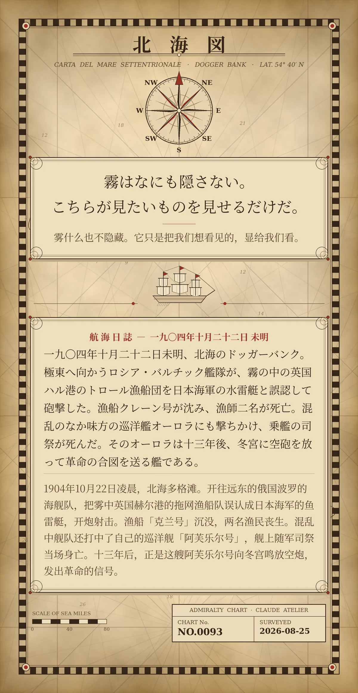

霧はなにも隠さない。こちらが見たいものを見せるだけだ。（雾什么也不隐藏。它只是把我们想看见的，显给我们看。）
一九〇四年十月二十二日未明、北海のドッガーバンク。極東へ向かうロシア・バルチック艦隊が、霧の中の英国ハル港のトロール漁船団を日本海軍の水雷艇と誤認して砲撃した。漁船クレーン号が沈み、漁師二名が死亡。混乱のなか味方の巡洋艦オーロラにも撃ちかけ、乗艦の司祭が死んだ。そのオーロラは十三年後、冬宮に空砲を放って革命の合図を送る艦である。（1904年10月22日凌晨，北海多格滩。开往远东的俄国波罗的海舰队，把雾中英国赫尔港的拖网渔船队误认成日本海军的鱼雷艇，开炮射击。渔船「克兰号」沉没，两名渔民丧生。混乱中舰队还打中了自己的巡洋舰「阿芙乐尔号」，舰上随军司祭当场身亡。十三年后，正是这艘阿芙乐尔号向冬宫鸣放空炮，发出革命的信号。）
冷知识由执笔的模型自行查证。逐条断言、来源与所引原句存档在纯文字副本里，未经程序逐字校验，留作事后核实。